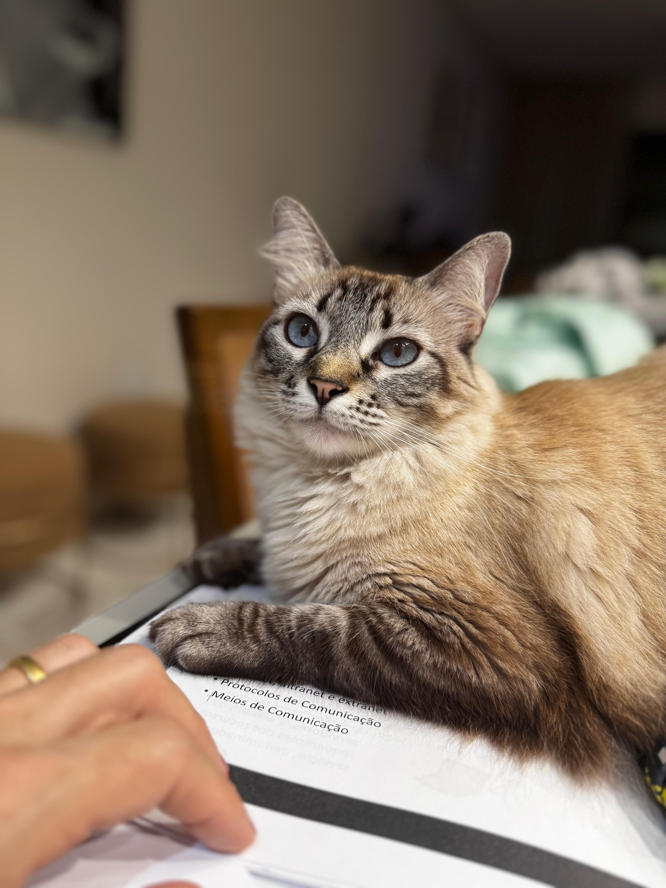
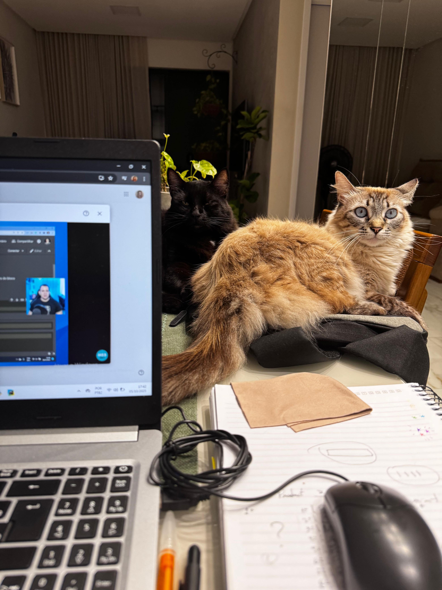

Sobre Pipoca
Sou uma gatinha branca de temperamento elegante e delicado. Gosto de viver no meu próprio ritmo, sempre de maneira calma e tranquila. Tenho muita paciência e aprecio ambientes silenciosos, onde posso observar tudo ao meu redor com serenidade. Não sou fã de brincadeiras muito agitadas ou barulhentas — prefiro interações suaves, carinhos leves e aqueles momentos de puro sossego em que posso simplesmente relaxar. Se você quiser minha companhia, basta sentar perto de mim e falar baixinho… eu adoro uma presença tranquila ao meu lado.